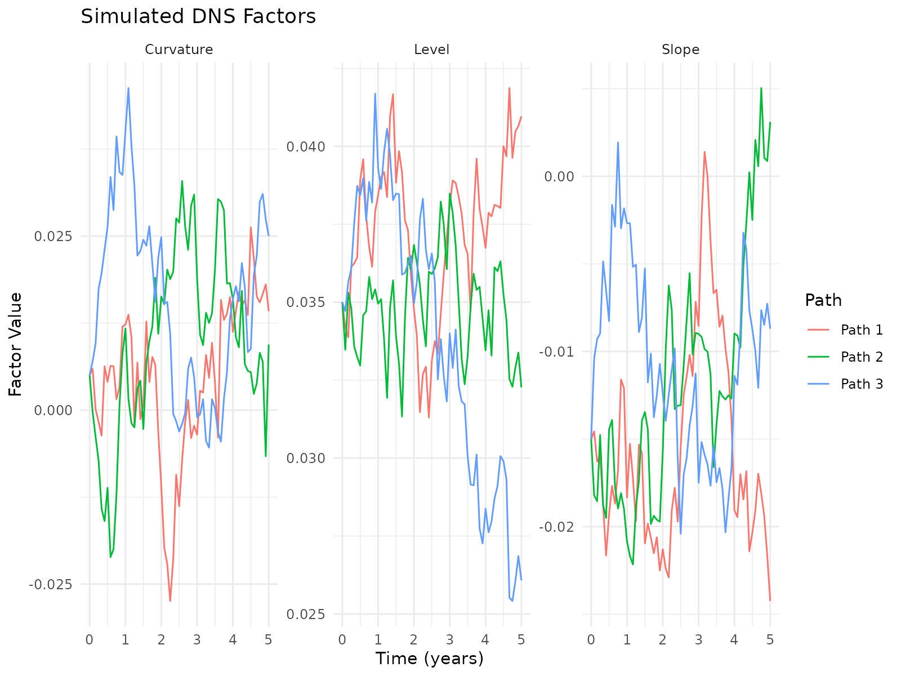
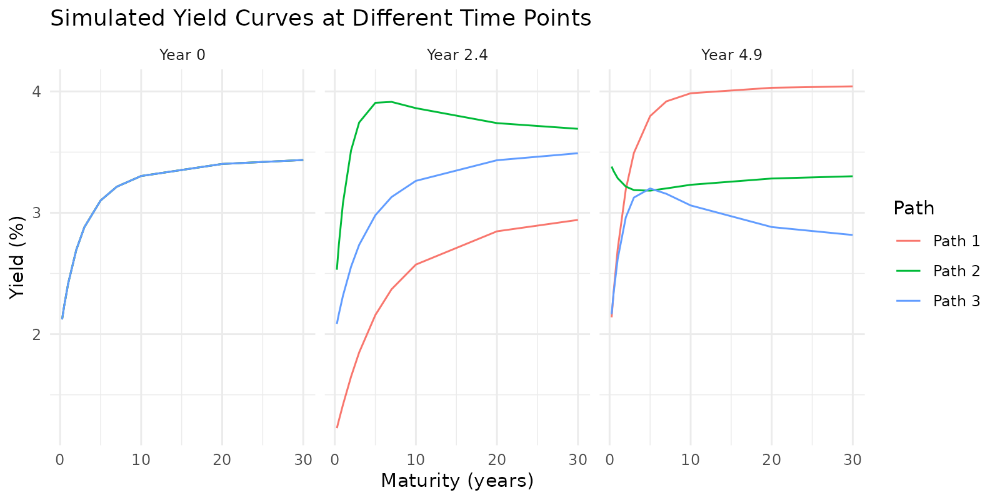
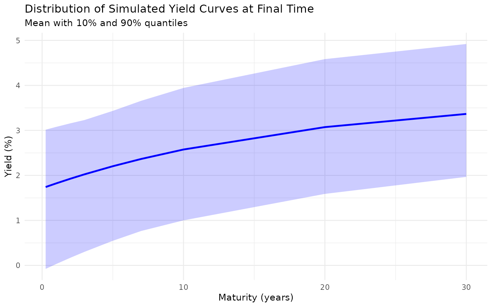

Advanced Stochastic Simulation with YUIMA in the DNS Model
dnsr package
2026-10-09
Source:vignettes/dnsr-yuima-integration.Rmd
dnsr-yuima-integration.RmdIntroduction
This vignette introduces the advanced stochastic simulation
capabilities of the dnsr package, which leverages the YUIMA
package for rigorous Stochastic Differential Equation (SDE) simulation.
The Dynamic Nelson-Siegel (DNS) model describes the evolution of
interest rates through a three-factor stochastic process. By integrating
with YUIMA, we achieve more accurate simulations and gain access to
advanced statistical estimation methods.
library(dnsr)
# The package will automatically check if YUIMA is installed
# install.packages("yuima") # Uncomment if needed
# Set up FRED API key before running examples
# has_yuima is set in the setup chunk above
if (!has_yuima) {
message("YUIMA package is not installed. Some code examples will not run.")
message("Install YUIMA with: install.packages('yuima')")
}Stochastic Differential Equations in the DNS Model
The DNS model characterizes the yield curve through three latent factors: level (), slope (), and curvature (). These factors are assumed to follow Ornstein-Uhlenbeck processes:
where:
- is the speed of mean reversion for factor
- is the long-run mean for factor
- is the volatility parameter for factor
- is a standard Brownian motion
In matrix form, the system can be represented as:
where: - is the vector of factors - is a diagonal matrix of mean-reversion speeds - is the vector of long-run means - is the volatility matrix (incorporating correlations) - is a vector of correlated Brownian motions
Two Engines, and When Each One Earns Its Keep
simulate_dns_factors() offers two engines.
engine = "yuima", the default, builds a YUIMA model
object and discretises it. What that buys is the rest of the YUIMA
ecosystem: multivariate processes handled rigorously, and the
quasi-maximum-likelihood and method-of-moments estimators used later in
this vignette. It is also the route to take if you want to extend the
model into something YUIMA supports and this package does not.
engine = "exact" does not discretise at all. The DNS
factor system is a linear SDE whose diffusion does not depend on the
state, so its transition density over a step of length
is Gaussian with a mean and covariance available in closed form:
Sampling that law directly is exact at every step size, needs no extra package, and is about two orders of magnitude faster, because one vectorised draw replaces one YUIMA call per path.
Note the covariance: it couples the two reversion speeds. Using each factor’s own step variance together with a Cholesky factor of the correlation matrix – the obvious implementation – is only correct when every is equal.
A note on sim_method. Both "euler" and
"milstein" are accepted by the YUIMA engine, but the
Milstein correction term is proportional to the derivative of the
diffusion with respect to the state, and here that diffusion is
constant. The term vanishes, so the two schemes coincide for this model
and "milstein" buys no accuracy. What governs accuracy on
the YUIMA path is n_steps; what removes the question is
engine = "exact".
Simulating DNS Factors with YUIMA
Let’s start by defining a set of parameters for our DNS model:
# Define DNS parameters
params <- list(
kappa = c(0.02, 0.3, 0.5), # Mean reversion speeds
theta = c(0.04, -0.02, 0.01), # Long-run means
sigma = c(0.005, 0.01, 0.02) # Volatilities
)
# Optional correlation matrix
correlation <- matrix(
c(1.0, 0.3, 0.1,
0.3, 1.0, 0.2,
0.1, 0.2, 1.0),
nrow = 3
)
params$correlation <- correlation
# Initial factor values
initial_factors <- c(0.035, -0.015, 0.005)
# Set seed for reproducibility
set.seed(123)Now we can simulate the DNS factors. For the vignette, we’ll use a simplified approach that works even without YUIMA installed:
# If YUIMA is available, use the advanced simulation method
# Otherwise, fall back to a demonstration mode that creates similar output
if (has_yuima) {
# Simulate factors for 5 years with 60 steps (monthly) and 3 paths
sim_result <- simulate_dns_factors(
params = params,
initial_factors = initial_factors,
time_horizon = 5,
n_steps = 60,
n_paths = 3,
include_correlation = TRUE
)
# Check structure of simulation result
str(sim_result, max.level = 1)
} else {
# Create a simulated object for demonstration purposes
# This is a simplified version that mimics the structure
# but doesn't use YUIMA for simulation
time <- seq(0, 5, length.out = 61)
factors <- array(0, dim = c(61, 3, 3))
# Create simplified simulation for demonstration
for (p in 1:3) {
for (f in 1:3) {
# Parameters for this factor
kappa <- params$kappa[f]
theta <- params$theta[f]
sigma <- params$sigma[f]
# Initial value
factors[1, p, f] <- initial_factors[f]
# Simple discretization
for (t in 2:61) {
dt <- time[t] - time[t-1]
dW <- rnorm(1, 0, sqrt(dt))
factors[t, p, f] <- factors[t-1, p, f] +
kappa * (theta - factors[t-1, p, f]) * dt +
sigma * dW
}
}
}
sim_result <- list(
factors = factors,
time = time,
params = params
)
# Check structure
str(sim_result, max.level = 1)
}
#> Warning in yuima.warn("'delta' (re)defined."):
#> YUIMA: 'delta' (re)defined.
#> List of 5
#> $ factors : num [1:61, 1:3, 1:3] 0.035 0.0342 0.0339 0.0361 0.0362 ...
#> $ time : num [1:61] 0 0.0833 0.1667 0.25 0.3333 ...
#> $ params :List of 4
#> $ sim_method: chr "euler"
#> $ engine : chr "yuima"
#> - attr(*, "class")= chr [1:2] "dns_simulation" "list"Let’s visualize the simulated factor paths:
# Create a data frame for plotting
factors_long <- data.frame()
# Extract and reshape the factor data
for (t in 1:length(sim_result$time)) {
for (p in 1:dim(sim_result$factors)[2]) { # Number of paths
for (f in 1:3) { # Three factors
factors_long <- rbind(factors_long, data.frame(
Time = sim_result$time[t],
Path = paste("Path", p),
Factor = c("Level", "Slope", "Curvature")[f],
Value = sim_result$factors[t, p, f]
))
}
}
}
# Plot the factors
library(ggplot2)
ggplot(factors_long, aes(x = Time, y = Value, color = Path)) +
geom_line() +
facet_wrap(~ Factor, scales = "free_y") +
labs(title = "Simulated DNS Factors",
x = "Time (years)",
y = "Factor Value",
color = "Path") +
theme_minimal()
From Factors to Yield Curves
Once we have simulated the factors, we can convert them to yield curves using the Nelson-Siegel formula:
where is the maturity and is the decay parameter.
# Define maturities (in years)
maturities <- c(0.25, 0.5, 1, 2, 3, 5, 7, 10, 20, 30)
# Convert factors to yields
yields <- calculate_dns_yields(
factors = sim_result$factors,
maturities = maturities,
lambda = ns_lambda(3.5)
)
# Look at yields for the first path at selected time points
t_points <- c(1, 30, 60) # Initial, middle, end
yields_subset <- yields[t_points, , 1]
colnames(yields_subset) <- maturities
rownames(yields_subset) <- paste("Year", round(sim_result$time[t_points], 1))
print(yields_subset * 100) # Convert to percentage
#> 0.25 0.5 1 2 3 5 7
#> Year 0 2.121510 2.230819 2.417968 2.694920 2.881798 3.101193 3.215056
#> Year 2.4 1.224908 1.290455 1.417329 1.649438 1.849229 2.157597 2.370040
#> Year 4.9 2.138590 2.349992 2.701890 3.192237 3.493507 3.796587 3.917951
#> 10 20 30
#> Year 0 3.303012 3.402399 3.434942
#> Year 2.4 2.573267 2.847184 2.941393
#> Year 4.9 3.984878 4.030144 4.041868Let’s visualize the yield curves for one path at different points in time:
# Create data for plotting
yields_df <- data.frame()
for (t in t_points) {
for (p in 1:dim(sim_result$factors)[2]) { # Number of paths
for (m in seq_along(maturities)) {
yields_df <- rbind(yields_df, data.frame(
Time = paste("Year", round(sim_result$time[t], 1)),
Maturity = maturities[m],
Yield = yields[t, m, p] * 100, # Convert to percentage
Path = paste("Path", p)
))
}
}
}
# Plot yield curves
ggplot(yields_df, aes(x = Maturity, y = Yield, color = Path, group = interaction(Time, Path))) +
geom_line() +
facet_wrap(~ Time) +
labs(title = "Simulated Yield Curves at Different Time Points",
x = "Maturity (years)",
y = "Yield (%)") +
theme_minimal()
Integrated Simulation with
simulate_dns_yield_curves
For convenience, the package provides a function that performs both factor simulation and yield curve calculation in a single step:
# Simulate factors and yields in one step
if (has_yuima) {
full_sim <- simulate_dns_yield_curves(
params = params,
initial_factors = initial_factors,
maturities = maturities,
lambda = ns_lambda(3.5),
time_horizon = 5,
n_steps = 60,
n_paths = 10,
include_correlation = TRUE,
sim_method = "euler"
)
} else {
# No YUIMA here, so use the exact engine, which needs no extra package. It
# samples the factor system's transition law directly rather than
# discretising it, so this is not a degraded substitute: it carries no
# discretisation error at all.
full_sim <- simulate_dns_yield_curves(
params = params,
initial_factors = initial_factors,
maturities = maturities,
lambda = ns_lambda(3.5),
time_horizon = 5,
n_steps = 60,
n_paths = 10,
include_correlation = TRUE,
engine = "exact"
)
}
#> Warning in yuima.warn("'delta' (re)defined."):
#> YUIMA: 'delta' (re)defined.
# Calculate summary statistics across paths for the final time point
final_yields <- full_sim$yields[61, , ]
mean_yields <- apply(final_yields, 1, mean) * 100
q10_yields <- apply(final_yields, 1, function(x) quantile(x, 0.1)) * 100
q90_yields <- apply(final_yields, 1, function(x) quantile(x, 0.9)) * 100
# Create data frame for summary statistics
summary_df <- data.frame(
Maturity = maturities,
Mean = mean_yields,
Q10 = q10_yields,
Q90 = q90_yields
)
print(summary_df)
#> Maturity Mean Q10 Q90
#> 1 0.25 1.936432 0.1837309 3.164874
#> 2 0.50 2.134700 0.4523574 3.336740
#> 3 1.00 2.468023 0.8798680 3.798452
#> 4 2.00 2.942728 1.4303312 4.422759
#> 5 3.00 3.244976 1.8068340 4.786635
#> 6 5.00 3.568919 2.2575120 5.115706
#> 7 7.00 3.715109 2.6405303 5.212468
#> 8 10.00 3.811662 3.0400261 5.114575
#> 9 20.00 3.902231 3.2839945 4.931057
#> 10 30.00 3.929996 3.3534757 4.863527Let’s visualize the distribution of final yield curves:
# Plot the distribution
ggplot(summary_df, aes(x = Maturity)) +
geom_line(aes(y = Mean), color = "blue", linewidth = 1) +
geom_ribbon(aes(ymin = Q10, ymax = Q90), alpha = 0.2, fill = "blue") +
labs(title = "Distribution of Simulated Yield Curves at Final Time",
subtitle = "Mean with 10% and 90% quantiles",
x = "Maturity (years)",
y = "Yield (%)") +
theme_minimal()
Working Directly with YUIMA Models
For users who want to leverage the full power of YUIMA, the package provides functions to create YUIMA models from DNS parameters. This section will only run if YUIMA is installed:
# Create a YUIMA model from DNS parameters
yuima_model <- dns_to_yuima_model(params, correlation)
# Display the model structure
yuima_model
#>
#> Diffusion process
#> Number of equations: 3
#> Number of Wiener noises: 3This YUIMA model can be used with other YUIMA functions for advanced analysis, such as parameter estimation from observed data.
Parameter Estimation with YUIMA
The package includes a function for estimating DNS model parameters using YUIMA’s advanced estimation methods. Let’s simulate some data and then try to recover the parameters:
# Generate synthetic data
set.seed(456)
sim_data <- simulate_dns_factors(
params = params,
initial_factors = initial_factors,
time_horizon = 2,
n_steps = 500,
n_paths = 1 # Single path for estimation
)
#> Warning in yuima.warn("'delta' (re)defined."):
#> YUIMA: 'delta' (re)defined.
# Extract the simulated factors (ensure correct dimensionality)
factor_data <- matrix(0, nrow = length(sim_data$time), ncol = 3)
for (i in 1:3) {
factor_data[, i] <- sim_data$factors[, 1, i]
}
colnames(factor_data) <- c("beta1", "beta2", "beta3")
# Estimate parameters using YUIMA
est_result <- try(estimate_dns_parameters_yuima(
factor_data = factor_data,
estimation_method = "qmle",
delta_t = 2/500
), silent = TRUE)
# If estimation works, compare true vs estimated parameters
if (!inherits(est_result, "try-error")) {
# Create a comparison table
comparison <- data.frame(
Parameter = rep(c("kappa", "theta", "sigma"), each = 3),
Factor = rep(c("Level", "Slope", "Curvature"), 3),
True = c(params$kappa, params$theta, params$sigma),
Estimated = c(
est_result$estimated_params$kappa,
est_result$estimated_params$theta,
est_result$estimated_params$sigma
)
)
print(comparison)
} else {
cat("Note: Parameter estimation requires additional YUIMA configurations.\n")
cat("True parameters were:\n")
print(data.frame(
Parameter = rep(c("kappa", "theta", "sigma"), each = 3),
Factor = rep(c("Level", "Slope", "Curvature"), 3),
Value = c(params$kappa, params$theta, params$sigma)
))
}
#> Parameter Factor True Estimated
#> kappa1 kappa Level 0.020 0.001000000
#> kappa2 kappa Slope 0.300 2.793190989
#> kappa3 kappa Curvature 0.500 2.745023067
#> theta1 theta Level 0.040 7.800115579
#> theta2 theta Slope -0.020 -0.012014889
#> theta3 theta Curvature 0.010 0.033805563
#> sigma1 sigma Level 0.005 0.004884389
#> sigma2 sigma Slope 0.010 0.009703772
#> sigma3 sigma Curvature 0.020 0.019684358Read that table carefully, because it is the most useful thing in this vignette.
The volatilities come back almost exactly: is identified by high-frequency variation, and 500 observations over two years supply plenty of it. The reversion speeds do not, and the size of the error follows the ratio of each factor’s half-life to the length of the sample:
| factor | true | implied half-life | sample | |
|---|---|---|---|---|
| level | 0.02 | 34.7 years | 2 years | ~120x |
| slope | 0.30 | 2.3 years | 2 years | ~7x |
| curvature | 0.50 | 1.4 years | 2 years | ~1.3x |
No estimator can recover a 35-year half-life from two years of data, and this one does not pretend to: it returns a large because, over a window that short, a slowly reverting series is indistinguishable from a random walk, and a random walk looks like fast reversion to a mean that happens to sit where the data is. inherits the problem, since the level a process reverts to is only identified if the reversion itself is.
and the correlation structure are therefore the parts of these dynamics
that a short sample determines;
and
require either a long history or a prior.
estimate_dns_dynamics() reports standard errors and a
half-life confidence interval for this reason; see
vignette("dns-model-introduction", package = "dnsr").
The same applies to the regression estimator and to the one-step
state-space estimator, estimate_dns_state_space(). It is a
property of the data rather than of the method.
Summary
YUIMA provides the SDE simulation and the QMLE and GMM estimators
used above. For factor simulation specifically,
engine = "exact" samples the transition law directly and
carries no discretisation error, so YUIMA is needed here for its
estimation functions and its wider class of models rather than for
simulation accuracy.
Key advantages of using YUIMA for DNS simulations include:
- Mathematical Rigor: Proper implementation of SDE numerical schemes
- Correlation Handling: Accurate simulation of correlated factors
- Statistical Estimation: Advanced methods for parameter estimation
- Numerical Stability: Better handling of extreme scenarios
When working with the DNS model for longer time horizons or when precise distributional properties are required, the YUIMA integration provides significant benefits over simpler simulation approaches.
References
Andersen, T. G., & Lund, J. (1997). Estimating continuous-time stochastic volatility models of the short-term interest rate. Journal of Econometrics, 77(2), 343-377.
Diebold, F. X., & Li, C. (2006). Forecasting the term structure of government bond yields. Journal of Econometrics, 130(2), 337-364.
Iacus, S. M. (2011). Option pricing and estimation of financial models with R. John Wiley & Sons.
Brouste, A., Fukasawa, M., Hino, H., Iacus, S. M., Kamatani, K., Koike, Y., … & Uchida, M. (2014). The YUIMA Project: A computational framework for simulation and inference of stochastic differential equations. Journal of Statistical Software, 57(4), 1-51.